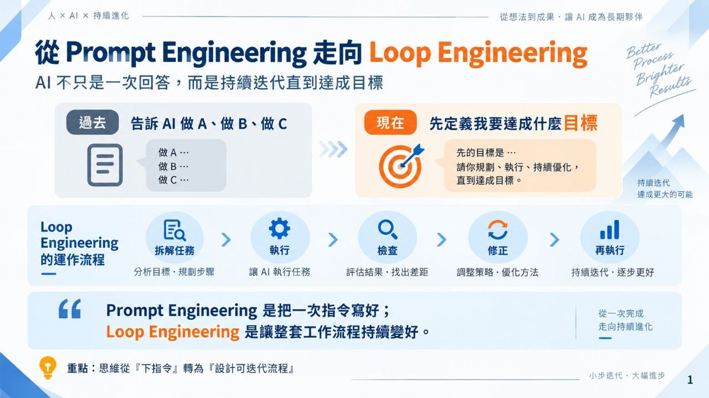
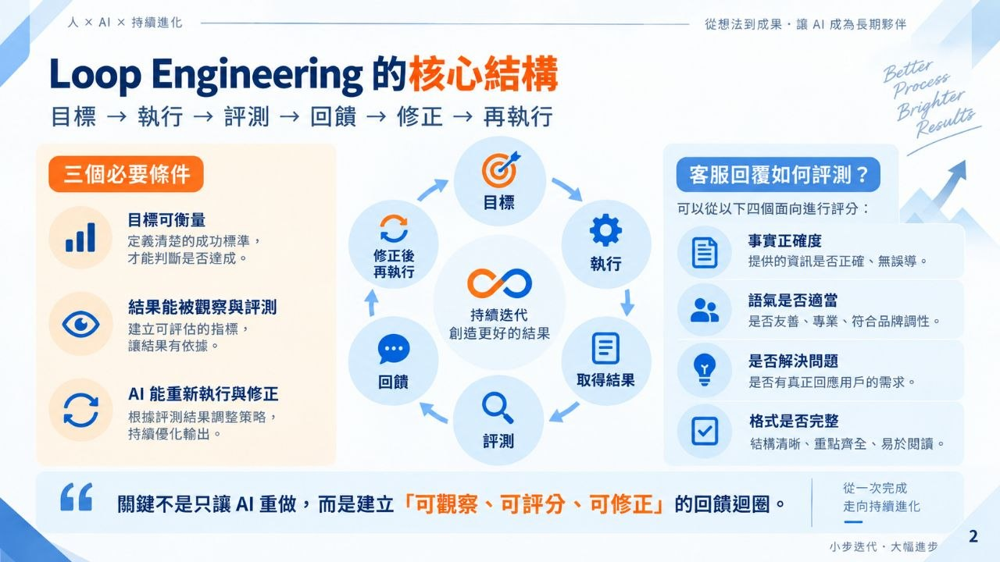
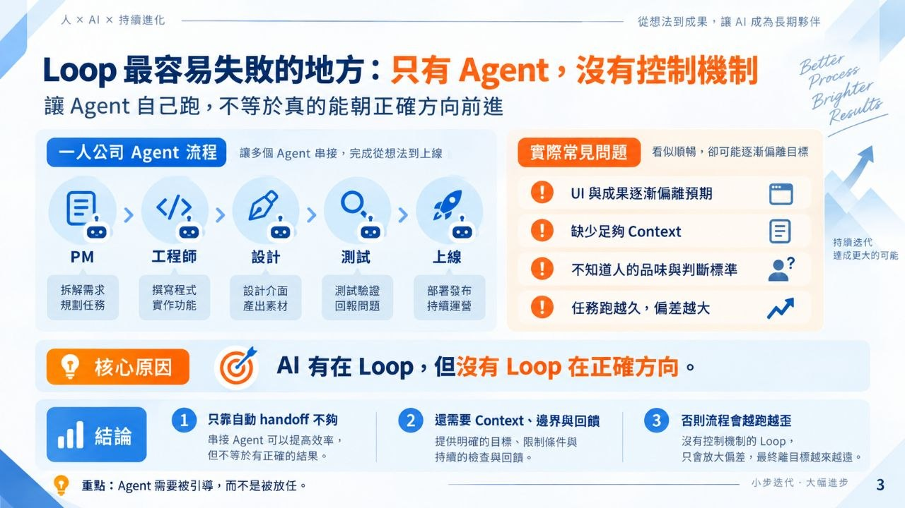
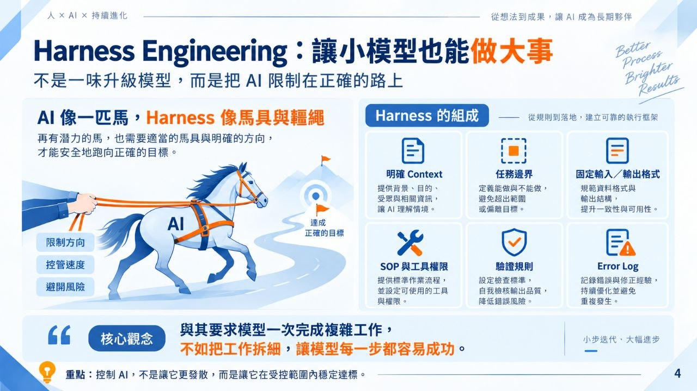
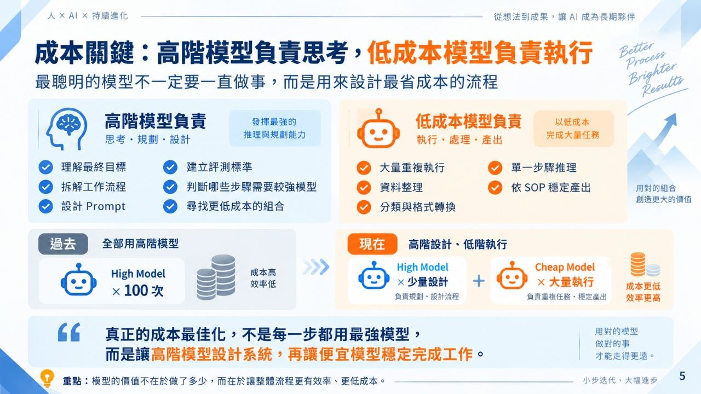
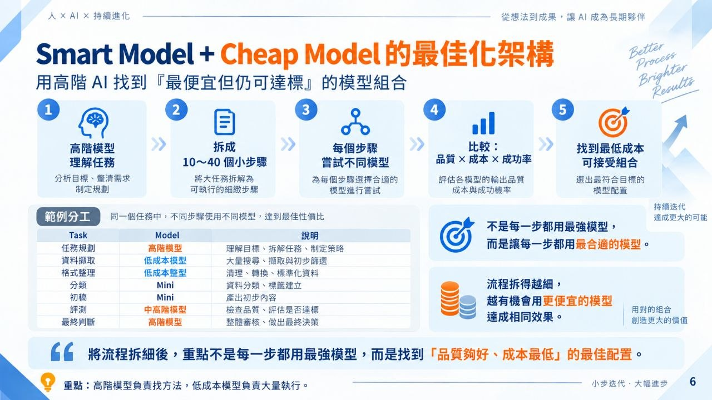
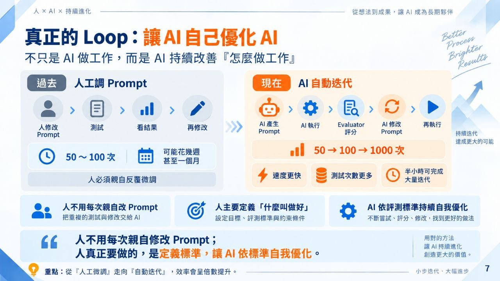
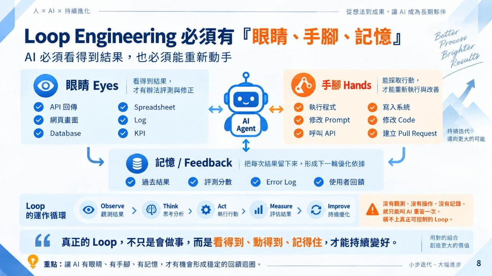
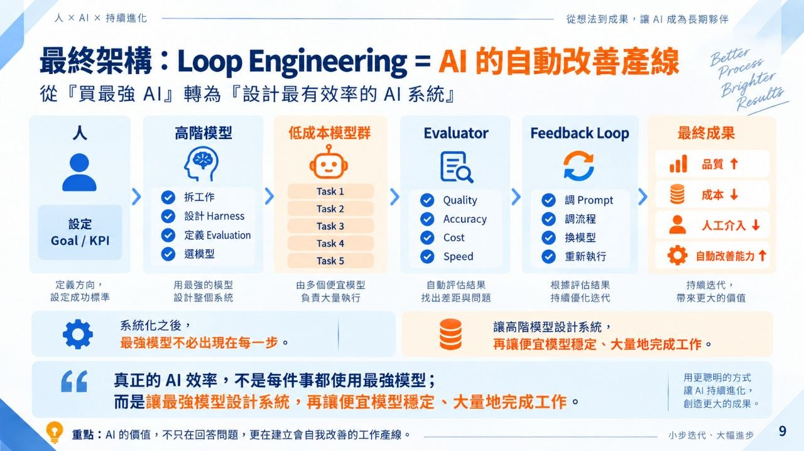

Loop Engineering 是什麼？用目標、回饋與 Harness 控制 AI 迭代
Loop Engineering 的重點不是把 Prompt 寫得更漂亮，而是設計一個能「設定目標、觀察結果、取得回饋、修正下一輪」的 AI 迭代系統；再搭配 Harness，把大任務拆成可控的小步驟，讓較便宜的模型也能穩定完成工作。
重點摘要









- Loop Engineering 是 Mindset 轉換。 過去常對 AI 說「幫我做 A、B、C」，但 Loop Engineering 更像是先講清楚「我要的目標是什麼」，再讓 AI 在循環中自己嘗試、評估、修正。
- 目標要能被衡量。 最容易 loop 的任務通常有明確數字、格式或檢查條件；例如 Excel 有 row、欄位、格式。如果是客服回覆這種難量化的成果，就要拆成事實正確性、語氣、是否解決問題等評分面向。
- Feedback Loop 是核心。 系統必須能知道上一輪結果更好或更差，才能決定下一輪往哪裡修正；沒有可觀察的回饋，Loop 就只是反覆亂跑。
- AI 可以自己修 Prompt。 講者提到，過去人類可能手動調 50 次、100 次 Prompt；現在可以讓 AI 自己產生、評估、修改 Prompt，半小時內跑出過去幾週甚至一個月才做得到的迭代次數。
- Loop 要有「眼睛」與「手腳」。 AI 需要能進入目標系統、取得 log、讀取結果、執行下一步；例如客服 Agent 可以把問題與回應輸出到 Spreadsheet 或 Excel，再讓另一個 Agent 評估品質。
- Harness Engineering 是控制 AI 的馬具。 Harness 不是讓模型更聰明，而是設計邊界、步驟、工具與限制，讓模型在較小、較明確的範圍裡工作。
- 便宜模型也能透過拆步驟變好用。 如果聰明模型負責拆解步驟與評估策略，便宜模型負責執行被拆細的小步驟，就可能用更低 API 成本達到接近的效果。
- 成本最佳化也可以交給 AI。 講者的做法是讓聰明 AI 不斷觀察：哪些步驟能換成較便宜模型、哪些步驟仍需要較強模型，讓整體流程更省。
- 護欄比一次性聰明更重要。 較弱模型一次做太多事容易失誤；但如果每個步驟都清楚、邊界明確、驗收條件具體，就能降低走偏機率。
一句話總結
Loop Engineering 的重點不是把 Prompt 寫得更漂亮，而是設計一個能「設定目標、觀察結果、取得回饋、修正下一輪」的 AI 迭代系統；再搭配 Harness，把大任務拆成可控的小步驟，讓較便宜的模型也能穩定完成工作。
關鍵觀察
- Loop Engineering 不只是「讓 AI 多跑幾輪」，而是把每一輪的成功條件、失敗回饋與下一步修正方式設計出來。
- Prompt Engineering 關心的是單次輸入怎麼寫；Loop Engineering 關心的是整個系統如何自我迭代。
- Harness Engineering 像是替 AI 上馬具：限制活動範圍、拆細任務、設工具權限與驗收方式。
- 「最強模型」不一定永遠最划算；當任務被拆得夠清楚，便宜模型可能已經足夠。
- 真正難的是把模糊目標轉成可評分、可觀察、可重跑的流程。
實作流程
- 定義目標：說清楚最終成功狀態，例如格式、分數、測試通過、使用者滿意度或特定輸出。
- 拆成評估面向：把模糊品質拆成事實正確、語氣、完整度、是否解決問題等指標。
- 建立回饋來源：讓 AI 能取得結果、log、Spreadsheet、測試輸出或使用者回饋。
- 設計迭代規則：讓 AI 依照回饋修改 Prompt、策略或下一步行動。
- 加上 Harness：把任務拆成小步驟，限制工具、權限、上下文與可走的路徑。
- 做成本最佳化：嘗試用較便宜模型跑部分步驟，但保留較強模型處理評估、拆解或高風險決策。
適合使用情境
- 客服 Agent 品質優化：用事實性、語氣、解決問題程度等指標自動評分與修正。
- Prompt 自動迭代：讓 AI 產生多版 Prompt、測試、評估，再挑出表現較好的版本。
- 開發 Agent：把大任務拆成多個 phase，每步都有明確輸出與驗收條件。
- 成本控制：用強模型做規劃與評估，用便宜模型執行清楚的小步驟。
- 內部 AI 平台設計：替不同任務建立可監控、可重試、可驗收的工作流。
風險提醒
- 不能衡量的目標很難真正 loop；若沒有評分標準，AI 只是在反覆產出，不一定會變好。
- 便宜模型不是萬用解；高風險、模糊、需要判斷責任的步驟仍應使用較強模型或保留人工審核。
- 讓 AI 能讀 log、執行工具與操作系統時，要設定權限邊界，避免過度授權。
- Loop 需要停止條件；如果沒有「什麼情況算完成」與「失敗幾次要停下來」，可能會浪費成本或產生錯誤自信。
影片說明欄
歡迎加入頻道會員 ➤ / @panscischool
Loop Engineering 是什麼？現在連 Prompt 都能讓 AI 自己修正自己了。
這集泛科學院首次與泛科學聯手直播，邀請 AI 界知名的海總理，帶你搞懂當紅新名詞 Loop Engineering。從「叫 AI 做 A 做 B 做 C」到「只設定目標讓 AI 自己迭代」，中間差在哪裡？看完這支影片，你會知道怎麼設計可量化的目標、怎麼建立 Feedback Loop，還有為什麼現在改 Prompt 這件事，最懂 AI 的其實是 AI 自己——甚至能用便宜模型也達到跟聰明模型一樣的效果。
00:00 開場：兩頻道首次聯手直播
00:40 從下指令到設定目標的心法轉換
01:22 目標要能衡量，Loop 才跑得動
02:45 實驗一人公司：AI 分身當老闆與員工
05:32 換個玩法：讓 Agent 每晚自動開發上線
07:38 核心關鍵：Feedback Loop 到底多重要
08:19 改用 AI 修 Prompt，效率暴增數十倍
09:44 想跑 Loop 前，你得先準備這些
11:10 新名詞 Harness Engineering 是什麼
13:17 實測：模型降級到 mini，成本砍十分之一
15:24 總結：聰明 AI 拆步驟、便宜 AI 做事
主編：柯雅芸
主持人：鄭國威
剪接：麥智成